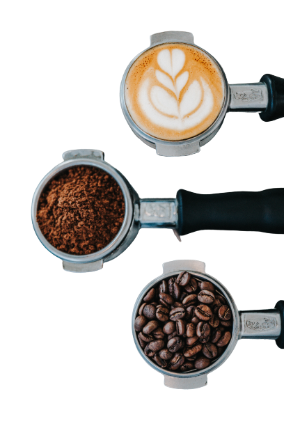
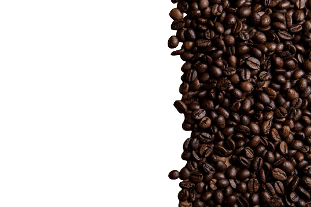

coffee house
measurements
contact
contact
contact
contact

The coffee Beans
The coffee beans we use are extracted from the finest types of trees and they are 100% organic and are roasted in the shop by specialists. 